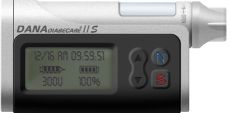
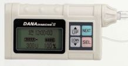

|  | |
Dim. [mm] |
46 x 77 x 19 |
Volume |
4.3 ci 67 cc |
Weight [oz] |
1.9 oz |
Reservoir Size |
300u plastic |
Connection |
Proprietary |
Screen Size |
595 sq mm |
Colors |
Black, Gray, Pink, Green, White |
Basal |
0.1 u/hr or 0.01 u/hr |
Total |
24/day |
Basal |
4 |
Basal |
60 min |
Basal |
Every 4 min |
Temp |
10% increments from 0% to 200% and up to 12 hours |
Bolus |
0.1, .05, 1.0u |
Carb and Correction Factors |
Yes, manual carb |
Bolus Type |
Normal, extended, combination |
1 u Bolus Duration |
12 sec |
Battery |
1/2 AA 3.6v lithium |
Battery Life |
8-10 weeks |
Motor |
DC |
Memory |
Last 500 boluses, primes and daily totals. Last 100 alrams (all time and date stamped) |
Software, Download |
none |
Water? |
IPX8 – 1 hour up to 3 � ft |
Extra |
Carb Counting Program, Active insulin on board multiple bolus options, PIN# programming and access to functions including daily maximums and custom settings for healthcare professions. Backlight, icon menu. Auto display of remaining insulin and remaining battery life. Lock-out feature with PIN unlock. Twelve languages |
Guarantee |
4 years |
|  | |
Dim. [mm] |
75 x 45 x 19 |
Volume |
3.91 c 64.1 cci |
Weight [oz] |
2.1 |
Reservoir Size |
300u plastic |
Connection |
Proprietary |
| Screen Size | |
Colors |
black, gray, blue, ivory |
Basal |
0.1 u |
Total |
24/day |
Basal |
1 |
Basal |
60 min |
Basal |
every 4 min. |
Temp |
-100% to +200% in increments of 25% for 1 to 12 hours in 60 min increments |
Bolus |
0.1 u < 10u, 1.0 u > 10 |
Carb and Correction Factors |
yes, manual, dose assist from Dana Magic Bolus software for Palm or Pocket PC |
Bolus Type |
units or carbs: standard, extended, combination |
1 u Bolus Duration |
8 sec. |
Battery |
3.6V DC |
Battery Life |
8-12 weeks |
Motor |
DC |
Memory |
Non-volatile: 50 boluses, 50 day totals, 50 primes, 12 alarms |
Software, Download |
NA |
Water? |
watertight |
Extra |
size, cost, audible bolus reminder, preset meal boluses, 30 min postmeal reminder |
Guarantee |
4 year |